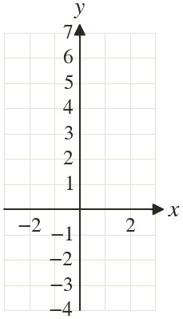
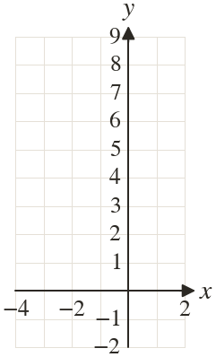

Westonbirt Maths · Simultaneous Equations and Graphs
Plotting Non-Linear Graphs
Name: ______________________ Date: ____________
1
Complete a table of values for for from to then draw the graph.

2
Complete a table of values for for from to then draw the graph.

3
For find when and when
4
Look at the graph of
a) Describe its shape.
b) Where is its lowest point?
c) What is its line of symmetry?
a) Describe its shape.
b) Where is its lowest point?
c) What is its line of symmetry?
5
Ella joins her plotted points for a quadratic with straight lines. What should she do instead?
Ext
Use your graph of to solve